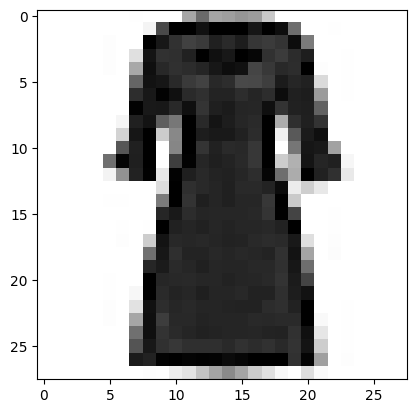

Tensorizing Neural Networks
Contents
Tensorizing Neural Networks#
This is an example of how one can tensorize layers of pre-trained neural network models, as described in [NPOV15’]
[ ]:
%mkdir data
%mkdir models
[1]:
import torch
import torch.nn as nn
import torch.optim as optim
from torch.utils.data import DataLoader
import torchvision.transforms as transforms
import torchvision.datasets as datasets
import matplotlib.pyplot as plt
import tensorkrowch as tk
[2]:
device = torch.device('cpu')
if torch.cuda.is_available():
device = torch.device('cuda:0')
elif torch.backends.mps.is_available():
device = torch.device('mps:0')
else:
device = torch.device('cpu')
device
[2]:
device(type='cuda', index=0)
Dataset#
[3]:
# FashionMNIST Dataset
dataset_name = 'fashion_mnist'
batch_size = 64
image_size = 28
input_size = image_size ** 2
num_classes = 10
transform = transforms.Compose([transforms.ToTensor(),
transforms.Resize(image_size, antialias=True),
])
# Load data
train_dataset = datasets.FashionMNIST(root='data/',
train=True,
transform=transform,
download=True)
test_dataset = datasets.FashionMNIST(root='data/',
train=False,
transform=transform,
download=True)
train_loader = DataLoader(dataset=train_dataset,
batch_size=batch_size,
shuffle=True)
test_loader = DataLoader(dataset=test_dataset,
batch_size=batch_size,
shuffle=True)
[4]:
random_sample = torch.randint(low=0, high=len(train_dataset), size=(1,)).item()
plt.imshow(train_dataset[random_sample][0].squeeze(0), cmap='Greys')
plt.show()
print(train_dataset[random_sample][1])

3
Train Neural Network#
[5]:
class FFFC(nn.Module): # Feed forward fully connected
def __init__(self, input_size, num_classes):
super().__init__() # super(NN, self).__init__()
self.fc1 = nn.Linear(input_size, 50)
self.fc2 = nn.Linear(50, num_classes)
self.relu = nn.ReLU()
def forward(self, x):
x = self.relu(self.fc1(x))
x = self.fc2(x)
return x
[6]:
# Initialize network
model_name = 'fffc'
model = FFFC(input_size=input_size, num_classes=num_classes)
model = model.to(device)
[7]:
# Hyperparameters
learning_rate = 1e-3
weight_decay = 1e-5
num_epochs = 10
# Loss and optimizer
criterion = nn.CrossEntropyLoss()
optimizer = optim.Adam(model.parameters(),
lr=learning_rate,
weight_decay=weight_decay)
[8]:
# Check accuracy on training & test to see how good our model is
def check_accuracy(loader, model):
num_correct = 0
num_samples = 0
model.eval()
with torch.no_grad():
for x, y in loader:
x = x.to(device)
y = y.to(device)
x = x.reshape(x.shape[0], -1)
scores = model(x)
_, predictions = scores.max(1)
num_correct += (predictions == y).sum()
num_samples += predictions.size(0)
accuracy = float(num_correct) / float(num_samples) * 100
model.train()
return accuracy
[9]:
# Train network
for epoch in range(num_epochs):
for batch_idx, (data, targets) in enumerate(train_loader):
# Get data to cuda if possible
data = data.to(device)
targets = targets.to(device)
# Get to correct shape
data = data.reshape(data.shape[0], -1)
# Forward
scores = model(data)
loss = criterion(scores, targets)
# Backward
optimizer.zero_grad()
loss.backward()
# Gradient descent
optimizer.step()
train_acc = check_accuracy(train_loader, model)
test_acc = check_accuracy(test_loader, model)
print(f'* Epoch {epoch + 1:<3} => Train. Acc.: {train_acc:.2f},'
f' Test Acc.: {test_acc:.2f}')
torch.save(model.state_dict(), f'models/{model_name}_{dataset_name}.pt')
* Epoch 1 => Train. Acc.: 84.52, Test Acc.: 83.08
* Epoch 2 => Train. Acc.: 86.19, Test Acc.: 84.96
* Epoch 3 => Train. Acc.: 86.57, Test Acc.: 85.15
* Epoch 4 => Train. Acc.: 87.06, Test Acc.: 85.08
* Epoch 5 => Train. Acc.: 87.96, Test Acc.: 86.15
* Epoch 6 => Train. Acc.: 87.83, Test Acc.: 86.07
* Epoch 7 => Train. Acc.: 88.56, Test Acc.: 86.62
* Epoch 8 => Train. Acc.: 89.33, Test Acc.: 86.69
* Epoch 9 => Train. Acc.: 88.94, Test Acc.: 86.45
* Epoch 10 => Train. Acc.: 89.30, Test Acc.: 87.03
[9]:
def n_params(model):
n = 0
for p in model.parameters():
n += p.numel()
return n
[11]:
n = n_params(model)
test_acc = check_accuracy(test_loader, model)
test_acc, n
[11]:
(87.03, 39760)
Define tensorized layer#
[10]:
# Load network
model = FFFC(input_size=input_size, num_classes=num_classes)
model.load_state_dict(torch.load(f'models/{model_name}_{dataset_name}.pt'))
model = model.to(device)
[11]:
class TN_Linear(tk.models.MPO):
def __init__(self, model, cum_percentage):
# Get weight matrix from model and reshape it
weight = model.fc1.weight.detach()
weight = weight.reshape(1, 1, 5, 5, 2, 1,
2, 2, 7, 7, 2, 2).permute(6, 0, 7, 1, 8, 2,
9, 3, 10, 4, 11, 5)
self.weight = weight
mpo_tensors = tk.decompositions.mat_to_mpo(weight,
cum_percentage=cum_percentage,
renormalize=True)
super().__init__(tensors=mpo_tensors)
# Save bias as parameter of tn layer
self.bias = nn.Parameter(model.fc1.bias.detach())
def set_data_nodes(self):
self.mps_data = tk.models.MPSData(n_features=6,
phys_dim=[2, 2, 7, 7, 2, 2],
bond_dim=10,
boundary='obc')
def add_data(self, data):
mps_tensors = tk.decompositions.vec_to_mps(data.reshape(-1, 2, 2, 7, 7, 2, 2),
n_batches=1,
cum_percentage=0.95,
renormalize=True)
self.mps_data.add_data(mps_tensors)
def contract(self):
return super().contract(inline_input=True,
inline_mats=True,
mps=self.mps_data)
def forward(self, x, *args, **kwargs):
result = super().forward(x, *args, **kwargs)
result = result.reshape(-1, 50)
result += self.bias
return result
[12]:
class TN_NN(nn.Module):
def __init__(self, model, cum_percentage):
super().__init__() # super(NN, self).__init__()
self.tn1 = TN_Linear(model, cum_percentage)
self.fc2 = model.fc2
self.relu = nn.ReLU()
def forward(self, x):
x = self.relu(self.tn1(x))
x = self.fc2(x)
return x
[13]:
model_name = 'tn_fffc'
tn_model = TN_NN(model, 0.85)
[19]:
n = n_params(tn_model)
test_acc = check_accuracy(test_loader, tn_model)
test_acc, n
[19]:
(86.61999999999999, 27944)
Train#
[14]:
# Trace the model to accelerate training
tn_model.tn1.trace(torch.zeros(1, input_size, device=device))
[15]:
# Hyperparameters
learning_rate = 1e-4
weight_decay = 1e-5
num_epochs = 5
# Loss and optimizer
criterion = nn.CrossEntropyLoss()
optimizer = optim.Adam(tn_model.parameters(),
lr=learning_rate,
weight_decay=weight_decay)
[16]:
# Train network
for epoch in range(num_epochs):
for batch_idx, (data, targets) in enumerate(train_loader):
# Get data to cuda if possible
data = data.to(device)
targets = targets.to(device)
# Get to correct shape
data = data.reshape(data.shape[0], -1)
# Forward
scores = tn_model(data)
loss = criterion(scores, targets)
# Backward
optimizer.zero_grad()
loss.backward()
# Gradient descent
optimizer.step()
train_acc = check_accuracy(train_loader, tn_model)
test_acc = check_accuracy(test_loader, tn_model)
print(f'* Epoch {epoch + 1:<3} => Train. Acc.: {train_acc:.2f},'
f' Test Acc.: {test_acc:.2f}')
# Reset before saving the model
tn_model.tn1.reset()
torch.save(tn_model.state_dict(), f'models/{model_name}_{dataset_name}.pt')
* Epoch 1 => Train. Acc.: 90.04, Test Acc.: 87.95
* Epoch 2 => Train. Acc.: 90.03, Test Acc.: 87.73
* Epoch 3 => Train. Acc.: 90.35, Test Acc.: 87.70
* Epoch 4 => Train. Acc.: 90.64, Test Acc.: 87.90
* Epoch 5 => Train. Acc.: 90.73, Test Acc.: 88.03
[17]:
tn_model.tn1.canonicalize(cum_percentage=0.8)
test_acc = check_accuracy(test_loader, tn_model)
print(test_acc, n_params(tn_model))
81.57 16406